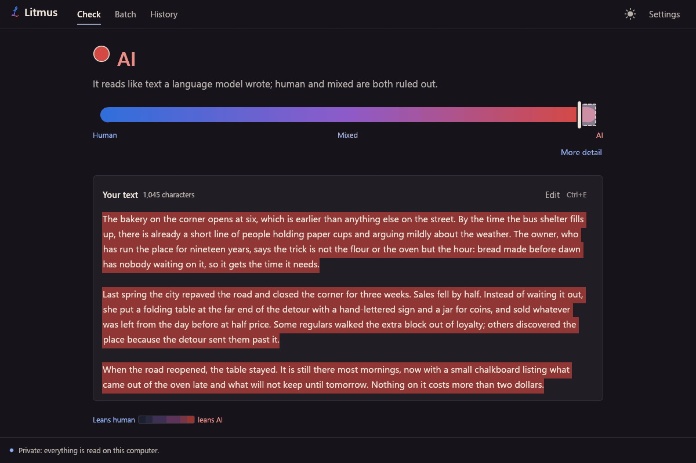

Litmus for Windows
One file. No installer, no account, and it works offline, so the text you check never leaves your computer.
- For
- Windows, 64-bit (x86-64)
- Size
- being finalized
- Version
- 1.0.0


Why download it
The browser page is fast too, and reads your text just as privately. The program adds speed and quick check.
Faster, though both are fast
Measured on one processor core (AMD Ryzen 7 3800X 8-Core Processor) with a 28,920-token document, which took about 1.0 seconds in the program and 5.2 in the browser. A token is a word or a piece of one.
Quick check, in any application
Select text anywhere, in an email, a document, or a web page, press Ctrl Alt L, and a small window by the pointer shows the reading. Quick check is off until you switch it on in Settings, and it is the only part of the program that touches the clipboard or a global hotkey.
The first run
-
Run the file you downloaded
There is nothing to install. Keep
litmus-app.exewherever you like and open it. It needs no account and no connection. -
If Windows warns about an unrecognized publisher
The file is not code-signed yet, so Windows SmartScreen says it comes from an unknown publisher. Select More info, then Run anyway. To be sure the file is the one published here, check your download first.
-
Paste or drop a text and press Check
An essay reads in well under a second. The program keeps its history and settings in your own user folder, and you can switch the history off in Settings.
-
Switch on quick check, if you want it
In Settings, switch on quick check. From then on Ctrl Alt L reads the text you select in any application.
Check that your download is the published file
In PowerShell, in the folder that holds the file, run:
Get-FileHash .\litmus-app.exeThe hash it prints should equal the litmus-app.exe line of the release's SHA256SUMS, which lists every file's hash. For this release that is . Anyone can rebuild the program from its published code and compare the hashes, as the audit guide describes.
Other ways to run it
Any computer, in the browser
On a Mac, Linux, a Chromebook, or a phone, the browser page works without installing anything, and your text stays in the page.
Use Litmus in your browsermacOS and Linux programs
The macOS program is not available yet.
The Linux program is not available yet.
The command line
litmus.exe reads files, folders, PDFs, or standard input and prints each reading, or JSON with --json.
.\litmus.exe score essay.txt
.\litmus.exe score --json report.pdfBuilding Litmus from its code, the Python module, and the tests are in the developer guide.